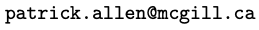

This course will be an introduction to the theory of automorphic representations. Automorphic representations give a representation theoretic framework to unify various type of modular forms.
We will attempt to give an overview of the subject over fields of characteristic 0, skipping many proofs, and focusing on examples. We will spend roughly a third of the course on each of the archimedean theory, the p-adic theory, and the global theory.
Instructor: Patrick Allen
Email: 
Time and location: MW, 1:05 – 2:25 in 920 BURN once we get the go-ahead to have in-person instruction. Untill then, lectures will be streamed via Zoom.
Prerequisites: Besides the basics of algebra and number theory, knowledge of classical modular forms will be useful. But we will try to fill in necessary background as needed.
Evaluation: Parts of this course will be conducted in a seminar style and students will be required to give some presentations.
Automorphic forms, representations and L-functions, parts 1 and 2 (aka the Corvallis volumes). Edited by Armand Borel and W. Casselman. Proceedings of Symposia in Pure Mathematics, XXXIII. American Mathematical Society, Providence, R.I., 1979.
Daniel Bump. Automorphic forms and representations. Cambridge Studies in Advanced Mathematics, 55. Cambridge University Press, Cambridge, 1997.
Stephen Gelbart. Automorphic forms on adèle groups. Annals of Mathematics Studies, No. 83. Princeton University Press, Princeton, N.J.; University of Tokyo Press, Tokyo, 1975.
Jayce Getz and Heekyoung Hahn. An Introduction to Automorphic Representations with a view toward Trace Formulae.
The automorphic project. Edited by (maybe entirely written by?) Yiannis Sakellaridis.
Apr 6: In Burn 920.
Tempered representations.
Apr 4: In Burn 920.
Satake and unramified principal series.
Mar 30: In Burn 920.
Spherical Hecke Algebras.
Mar 28: In Burn 920.
Hecke algebras.
Mar 23: In Burn 920.
Supercuspidal representations.
Mar 21: In Burn 920.
Representations of locally profinite groups.
Mar 16: In Burn 920.
Automorphic representations and L2.
Mar 14: In Burn 920.
More modular forms as auotmorphic forms.
Mar 9: In Burn 920.
Hecke operators on modular forms. Automorphic forms and representations.
Mar 7: In Burn 920.
Adelic points of reductive groups. Modular forms as automorphic forms.
Feb 23: In Burn 920.
Tempered representations.
Feb 21: In Burn 920.
More discrete series.
Feb 16: Via Zoom.
Discrete series.
Feb 14: Via Zoom.
The Harish-Chandra Isomorphism continued.
Feb 9: In Burn 920.
Action of the universal enveloping algebra.
Feb 7: In Burn 920.
Action of the universal enveloping algebra.
Feb 2: In Burn 920.
Smooth vectors an (g,K)-modules.
Jan 31: In Burn 920.
Examples and properties.
Jan 26: In Burn 920.
Representations of Lie groups.
Jan 24: In Burn 920.
Lie groups.
Jan 19: Via Zoom.
Reductive groups and root datum.
Jan 17: Via Zoom.
Reductive groups.
Jan 14:Via Zoom.
More algebraic groups.
Jan 10: Via Zoom.
A quick primer on affine algebraic groups.
Jan 5: Via Zoom.
Introduction and motivation.